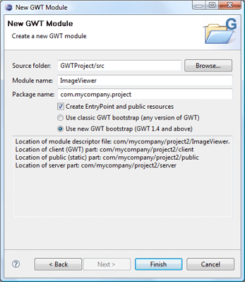
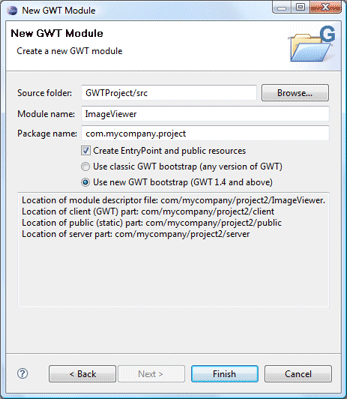

New GWT Modules can be
created using the GWT Module wizard. The wizard can be
selected from the drop down wizard menu or from the
Eclipse New wizard.
New GWT Modules can be
created using the GWT Module wizard. The wizard can be
selected from the drop down wizard menu or from the
Eclipse New wizard.
To use the wizard, select the project source folder and package to contain the module. Then enter the module name and hit the Finish button.
- A module descriptor file will be created
- Client, public and server packages will be created
- Optionally create an EntryPoint file and public resources
- Generate code that uses the classic GWT bootstrap process (any version of GWT) or the new GWT 1.4 and above bootstrap process
Note: if you would like to create a common shareable widget library project, click here.
 
